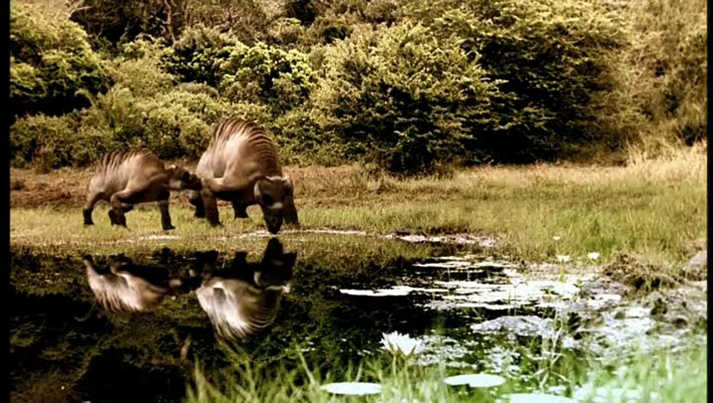
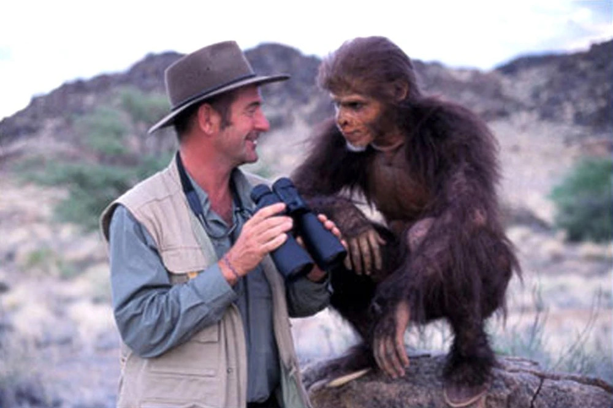
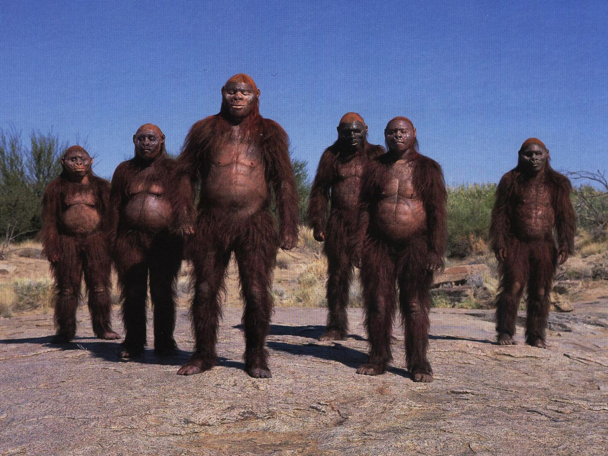
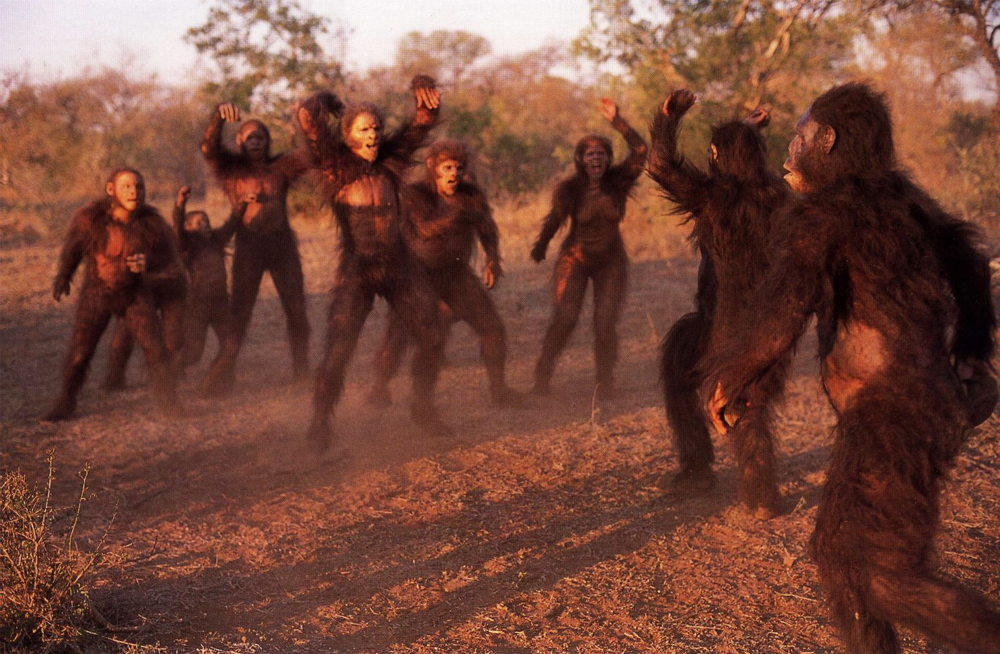
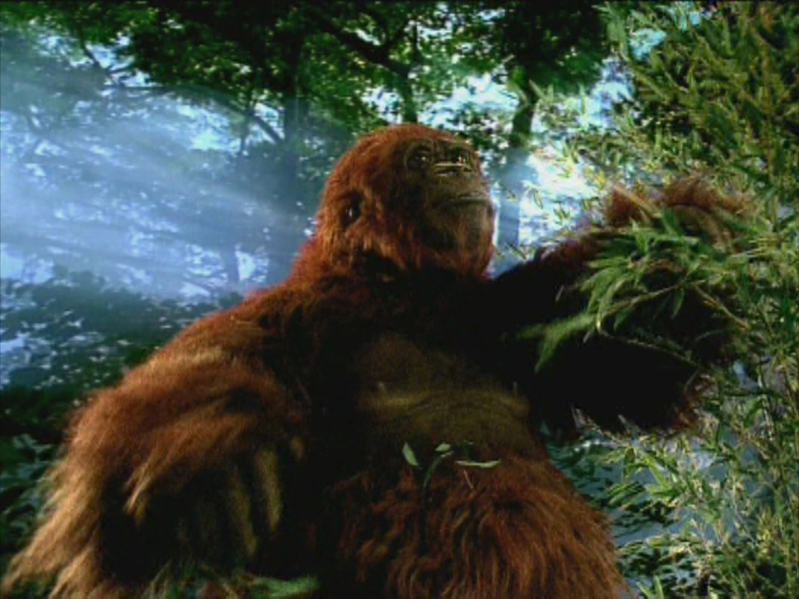
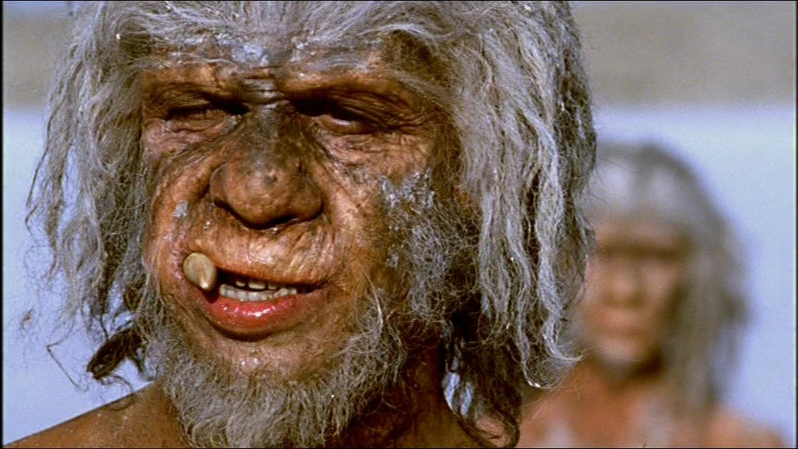
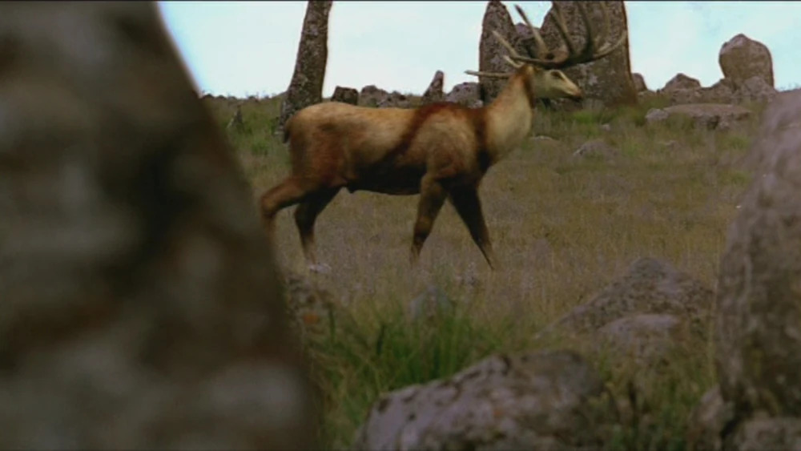

Ranking Walking With Cavemen
Abortion remains one of society’s most difficult issues. Heated debates rage back and forth, perhaps because they get to the heart of the human condition. We are blessed, and cursed, with the knowledge of our own mortality, and can feel hypothetical situations as if they are real. This unborn baby could one day become a child, and nothing rallies humans like the defence of a child.
I, however, would have been fully and absolutely pro aborting the disgusting evil of Walking with Cavemen right in the production womb. Ironically, this series attempts to discuss many of the themes I have mentioned above. It fails at that.
You will find very little on this series online. Humanity ought to keep it that way. I watched this series, which I really believe should be on BBC IPlayer despite its quality (as it was a BBC Production), through an Internet Archive post where the first word is Arab. None of the Walking with… production team were involved in this in any way.
Anyway, let’s dive into this show. To spice up this review, I have inserted quotations directly from the BBC's 'Your Views' webpage from the time of broadcast.
First Ancestors
Visuals: 2
Ah. Starting strong, aren’t we? Let’s get to the heart of the issue: these cavemen are Planet of the Apes rejects, without any of the charm that old movie had. This show knows the apes look bad, but instead of ploughing on with good cinematography anyway, they employ as many techniques as possible to try to avoid you getting a glimpse as to how stupid these apes are. It is so obvious these are humans in monkey suits. Watching them can bring back CBeebies flashbacks.
“Would have been more convinced if you'd shown the Fimbles populating the ancient plains”
StuartIn one part, they use these odd editing tricks to avoid giving us a good look at Austrolopethicus’ ancestor, yet it comes across exclusively as a budget saver, just like the copy paste WWB animals occasionally gracing our screens (with just the thinnest veneer of a poor colour correct put on).

Shot from Walking with Cavemen (BBC, 2003) like all images in this article unless expressed otherwise.
Storytelling: 1
When a television series becomes a franchise, it is expected some changes to the formula will be made with future spin-offs: genres pivot; secondary characters take centre stage; and pacing adapts.
The addition of Baron Robert Winston as some sort of omnipotent bumbling buffoon standing around in key shots like a fart in a room whose smell you can’t get rid of is not one of those intelligent changes. He wastes my time at the start of the episodes wittering about his pompous family. Any shred of doubt you may have had about the severity of my opening to this post must surely be confirmed when he hops in his time travelling jeep full of fossils he stole.
“Dr Robert Winston looked great, Lucy and co I suppose looked alright too ”
JamesHe just tends to linger about scenes, like some sort of paleo ape stalker. He’s just there. Always. In the ancestor scene, to avoid the need for a new creature, the only shot they use is one of Winston just hanging over a forest. I just don't see the appeal that James does.
The reveal Lucy was only fossilised because this prat buried her must be like when parents tell their child their dog wasn’t really sent to a farm.

Shot from Walking with Cavemen (BBC, 2003) like all images in this article unless expressed otherwise.
Ambience: 1
Same Rift Valley issues as before. For the ‘Cradle of Humanity’ it is just a bit boring. The Walking with Cavemen theme is pretty epic, but it is overused here.
Creatures: 2
Hypothetically, the wikipedia page cited a crocodile here, but for the life of me I cannot recall one. I don’t care enough about this slop to verify it. This show is what happens when you get some overexcited BBC executive who thinks they can deliver a TV show via corporate mandate instead of an ounce of creative vision and oversight. Where are the animals? You can’t seriously expect to get away with just Cavemen in your show, right? I’ll give the Australopithecus some credit here as their depiction is a little better than WWB’s, hence why this isn’t a 1 rating.
“Did anyone notice the similarity between the Australopithecus afarensis, and our current political leaders? ”
MichaelBlood Brothers
Visuals: 3
Trying to come up with these scores is like trying to decide whether you’d like to have a rectum-busting rock of a poo, or violent explosive liquid poo burst out. You’d rather think about neither and it makes you slightly grumpy to talk about it. There is an absolute chasm between the first and second halves of this series in terms of quality, even if the ratings don’t reflect that.
This episode is just furries again, and there are even more of them this time. I have to give the Habilis credit for looking somewhat reasonable. The closer an ape is to Sapiens the better they look, in general. Funny how that works. Again, we have but a single background for the entire episode. I would not be surprised if they were lazy enough to film this in a single day.

Shot from Walking with Cavemen (BBC, 2003) like all images in this article unless expressed otherwise.
Storytelling: 2
My notes say dire. Like a Steven Moffat plot, it attempts to be elaborate and intelligent about some central mystery of whose genetics will we interpret between three ape species. Balancing three species along with Winston cameos may be tricky, you rightly argue, how will this series, who seem as if Infinite Monkey Theorem is actually writing their scripts, handle this? The answer, dear reader, is by intellectually ditching one of the species and never mentioning them, meaning we also get to never show them on screen. This show is actually ragebait.
“Short of a few soap stars turning up as the cavemen, (Phil Mitchell?), or having a chance to vote off the least popular ape, I can't think how much worse it could get. ”
MarkThe central conflict is whether or not ingenuity is present in the ape species. Despite half the contenders going on a pointless, disconnected side-quest regarding some lone female, the evidence for that in the Habilis is well-presented. You’d think the Habilis would win, given we’re creative. The episode, however, has other ideas. It consistently shows the Habilis losing and dying. Winston then tells us the Habilis can adapt and change and survive (even though they can’t) AND REVEAL THAT ANOTHER OFFSCREEN APE LIVING AT THE SAME TIME ARE OUR DESCENDENTS.
Ambience: 2
It’s just some dump of a Savannah with no music. The only reason it isn’t a 1 is because I remember a Habilis hunting theme.
“Absolute rubbish. We should be given a TV licence refund ”
DavidCreatures: 4
Here I have to give some credit. Despite the episode resembling a war crime in some areas, this is not one of them. 3 apes in a single episode is an impressive achievement, given how hard the prosthetics are to develop and apply. Furthermore, hearty populations of each ape are shown. There are bees, vultures and a lion, who get plot relevance, too. This episode cost a lot of money, and I feel bad rating it this low so it needed a somewhat justifiable boost here.

Shot from Walking with Cavemen (BBC, 2003) like all images in this article unless expressed otherwise.
Savage Family
Visuals: 3
Like a Temu Agamemnon standing in the gates of Troy, there is the tiniest bit of aura farming in this episode. Aura farming is essential in any media because it is code for the media being memorable, the aspirational state of anything living or otherwise. There is this lovely salt plain the five main characters symmetrically stand on, resembling the Parlay scene in At World’s End, whilst they stare into the distance, in their beautiful orange dustball home.
The object of those cavemens’ desire, which is much more realistic to this Universe, is a poorly keyed in Wildebeest, and it is laughable and was even at the time.
“ I watched it to learn something but found myself in hysterics and positively gobsmacked. I think the BBC has really let themselves down this time. ”
Nic, not NickWalking with Cavemen is not a popular series. It is obscure. Perhaps the least obscure part, and indeed the part I discovered first of this series, is the Gigantopithecus depiction. As our brilliantly named ancestors the Erectus wander through the dark bamboo forests of some BBC studio in search of a hog the show couldn’t be bothered to create visuals for, they stumble across our most monstrous cousin, Gigantopithecus, not recreated like some Jungle Book King, but instead a man in an ape suit really close to the camera in a completely separate shot to the others. It’s incredibly goofy. And goofy perhaps isn’t the adjective that scores the highest.

Shot from Walking with Cavemen (BBC, 2003) like all images in this article unless expressed otherwise.
Storytelling: 4
It is with great joy that I announce they finally, after over an hour of this slop, realised showing the apes evolve over time and demonstrating how those evolutions helped them survive might prove a good niche for a paleodocumentary. Giving the apes suitable uses for running, sweating and socialising was a brilliant idea, and the execution is superb.
Unfortunately, the story loses its focus and draws few meaningful conclusions about the trials of the Ergaster, and certainly does not do much with its Erectus diversion into the Oriental 1 ecosystem. This story has significant plusses, yet obvious negatives. I would generally rather have higher highs than a more mediocre score with a low range.
Ambience: 2
The salt plains have serious aura, as they always do. Did you know that the salt plains in The Last Jedi, an intellectual property with similar qualities to this episode, were made using coloured paper? There’s a half-truth in there, just like the idea that this episode has a soundtrack. You can’t have a third of an episode in a BBC studio and expect to be taken seriously here. I am forever grateful, however, that there are no more ape noises, and they use some quite pleasant-sounding language immitations.

Shot from Walking with Cavemen (BBC, 2003) like all images in this article unless expressed otherwise.
Creatures: 3
Gigantopithecus is exactly the sort of obscure, awesome, oversized thing I want to see on screen. I commend the ambition, despite the hillarious execution. Two hominins per episode is about what the series probably can best cover, and these humans feel suitably humanoid-esque. Yet this is it. I understand the goal was to focus on us, but ignoring the ecosystems they were a part of make the apes feel like humans in our current post-history state, rather than recognising early humanoids lived in harmony with nature as an animal, unlike any other for sure, but an animal nevertheless.
“Possibly the most unintentionally hilarious programme I have ever seen”
JeffI realised in editing that Erectus were the original human migrant, and by definition the only organism that consciously chose to walk into areas they should not have naturally been in. I expect accordingly half the British population should now hate on Erectus, and we should leave the Erectus Convention of Human Rights (ECHR for short, as everyone is calling it).
“we have to get rid of the ECHR”
Farage, 16th April 2025The Survivors
Visuals: 5
After 90 minutes of some student film version of Walking With…, it is a shock to see a stunning backdrop in this series. My jaw was even lower when I saw custom Mammoth shots, even if they are a tad below the expected qualities. I cannot stress how positive the change from humans in ape costumes wandering the same 10m radius to Neanderthals conquering their Ice Age territory is. Even the Megaloceros hunting scene and subsequent Heidelbergensis escapades are competently shot.

Shot from Walking with Cavemen (BBC, 2003) like all images in this article unless expressed otherwise.
Unfortunately that analysis only covers 2/3rds of this episode: we also look at Sapiens. Now, it would be entirely reasonable to expect a proper visual on their Sapiens depiction given, you know, how every actor is themselves a Sapien in this series. Who am I kidding. What an unreasonable expectation.
We finish with dozens of shots on a single cavepainter, which is acceptable for about the first four shots.
Storytelling: 6
It’s good.
No, really.
It’s good.
We focus on the central, most important, adaptation our ancestors lacked: creativity, which is effectively set-up in the opening. The Neanderthals get a convincing, compelling, classic Walking With segment about the choice between risking a baby on the long march south, or staking out in the cold for longer. It’s a distinctly human story, albeit one slightly disconnected from that central narrative. They then highlight the disparity between them and Sapiens via examples, tying it together with the cave painting being the apex of our prehistoric creativity, and perhaps even marking the point at where we stopped being cavemen. Regretfully, the strengthened focus on Sapiens leave the Neanderthals left out in the finale, and there is minimal nuance as to the role Neanderthals had on our species.
And it is here where I realised Winston had grown on me. His advantages to this show are twofold: humour and story. There’s this brilliant shot in this episode of starving Sapiens in the dusty wilderness of Africa, and just in the top third of the screen is Robert Winston in a multicoloured stripy hot air balloon. He is even used, via a lame joke, to demonstrate the contrast between Neanderthals and Sapiens. Winston had to be in this show, and instead of having him simply stand in shots, this show is at its best when he is interacting at a distance with the apes, like some omniscient naturalist experimentalist. An example of what not to do is the ending here, however, where he steals a human baby and expresses his fantasies of raising it.
Ambience: 3
This series’ generational error in not hiring Bartlett is further compounded by the lacklustre score of this episode. Whilst the surprisingly cohesive environments may have ambience, the music does not.
Creatures: 5
It is remarkable how including creatures in your nature documentary can boost the overall perception of your media, even if it is as simple as a regular rabbit, a reused Megaloceros, and a few Mammoths. The landmark attractions here are the Neanderthals, who are filled with humanity, and are far superior to their appearance in WWB, partly because they take centre stage here. It’s not good enough for average, neither in range, nor depth, thanks to the awful Sapiens depiction. Heidelbergensis were nice to see, bridging the gap from Ergaster to Neanderthals.
| Episode | Visuals | Storytelling | Ambience | Creatures | Total |
|---|---|---|---|---|---|
| First Ancestors | 2 | 1 | 1 | 2 | 6 |
| Blood Brothers | 3 | 2 | 2 | 4 | 11 |
| Savage Family | 3 | 4 | 2 | 3 | 12 |
| The Survivors | 5 | 6 | 3 | 5 | 19 |
“It is really amazing what you can find out on TV now. ”
RobynI mean what is there to conclude. Perhaps a reasonable conclusion is that this was a budget series commissioned by some lazy BBC executive to take advantage of the considerable attention and finances the Walking With… series was attracting abroad, with little of the heart, writing quality, and narrative cohesion of the previous installments. A little like Walking with Paleontologists BBC 2025 (can sometimes be found online as Walking with Dinosaurs 2025), I suppose.
Yet this ignores one critical fact: the real budget for this series.
It was identical to that of every other Walking With… programme.
They wasted £1M an episode on this utter slop.
And I wasted hours of my time watching and writing this.
In every way I feel robbed.
Nevertheless, I feel compelled to come to the same conclusion as Paul. At least it's not one of those reality TV shows, or god forbid a comedian panel show.
“Still, I'd rather see my licence fee go on this type of progamming than the continual DIY or real life shows that the BBC have been churning out recentl”
Paul1 I am not using Oriental to mean anything to do with people. I mean to imply some sense of mysticism and get across the sense that this was an objectively exotic and strange environment. No other human or hominin had ever set foot on these lands. We had never seen bears, deer, beavers, and wolves before.